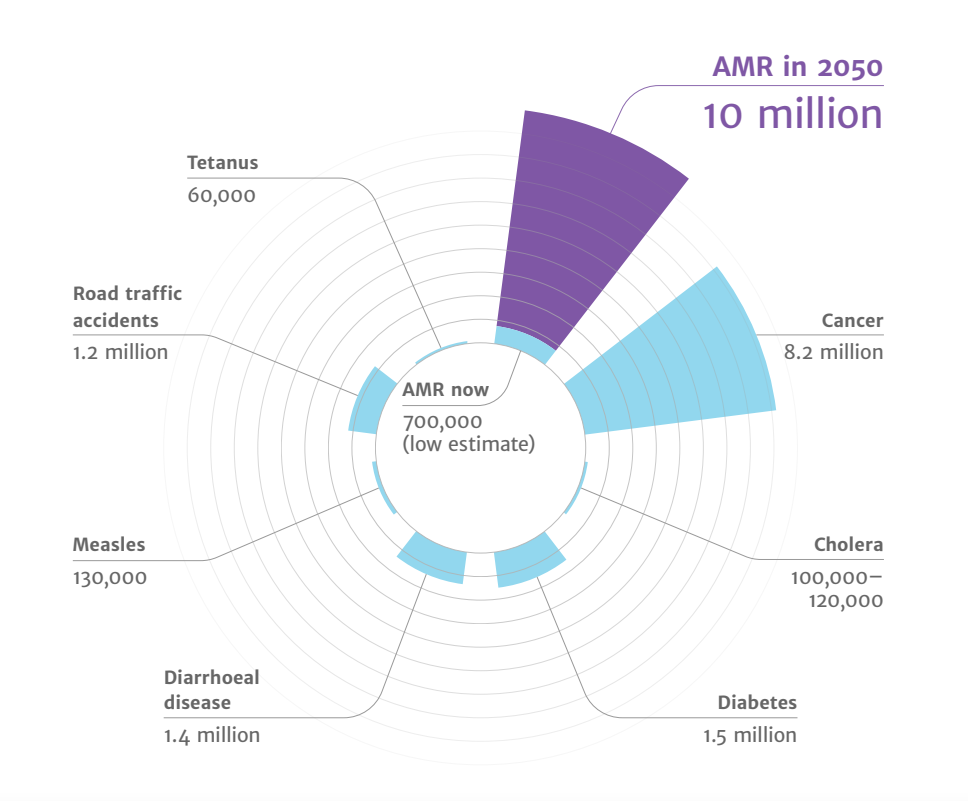

The global future of AMR
- Drug-resistant infections already cause at least 700,000 deaths globally a year, including 230,000 deaths from multidrug-resistant tuberculosis. The estimated total number of deaths due to AMR could climb to 10 million deaths globally per year by 2050 under current projections.
- Increasing resistance could lead to an unthinkable future of untreatable infections, reversing more than a 100 years of medical progress. Routine medical procedures or surgery will become more dangerous and associated with higher complication rates. Immunosuppression, cancer chemotherapy and transplantation may carry unacceptable risk for many patients if infections cannot be effectively prevented and treated.
- Economic and social progress in many countries will be dramatically impacted by increasing AMR leading to political and social instability. The initial short-term economic damage of uncontrolled antimicrobial resistance will be comparable to the economic shocks experienced during the 2008-2009 global financial crisis and result in dramatically-increased healthcare expenditures; reductions in food and feed production, reduced economic output, and increased poverty and inequality. The economic impact of antimicrobial resistance is predicted to be even greater and longer lasting on low-and middle-income (LMIC) countries.

Figure 8. Projected deaths due to antimicrobial resistance in 2050. Source: O’Neil Report.